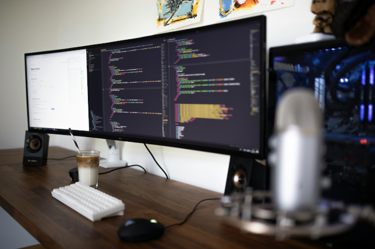

Notebook ou Laptop
postado 04 setembro 2024

Notebook é um computador portátil, leve e compacto, ideal para quem precisa de mobilidade no dia a dia. Ele permite realizar tarefas como navegação na internet, edição de documentos, estudo e trabalho em qualquer lugar, sem a necessidade de estar conectado a uma tomada o tempo todo.
Leia mais
Computadores
postado 04 setembro 2024

O computador é um equipamento eletrônico usado para processar, armazenar e transmitir informações. Ele é essencial em diversas atividades, desde estudos e trabalho até entretenimento. Pode ser utilizado para acessar a internet, criar documentos, rodar programas e realizar tarefas complexas de forma rápida e eficiente.
Leia mais
Smartphones
postado 04 setembro 2024

Smartphones são dispositivos móveis que combinam as funções de um celular com as de um computador. Permitem fazer chamadas, acessar a internet, usar redes sociais, tirar fotos, assistir vídeos e rodar diversos aplicativos. São ferramentas práticas e essenciais no dia a dia moderno, facilitando a comunicação e o acesso à informação em qualquer lugar.
Leia mais